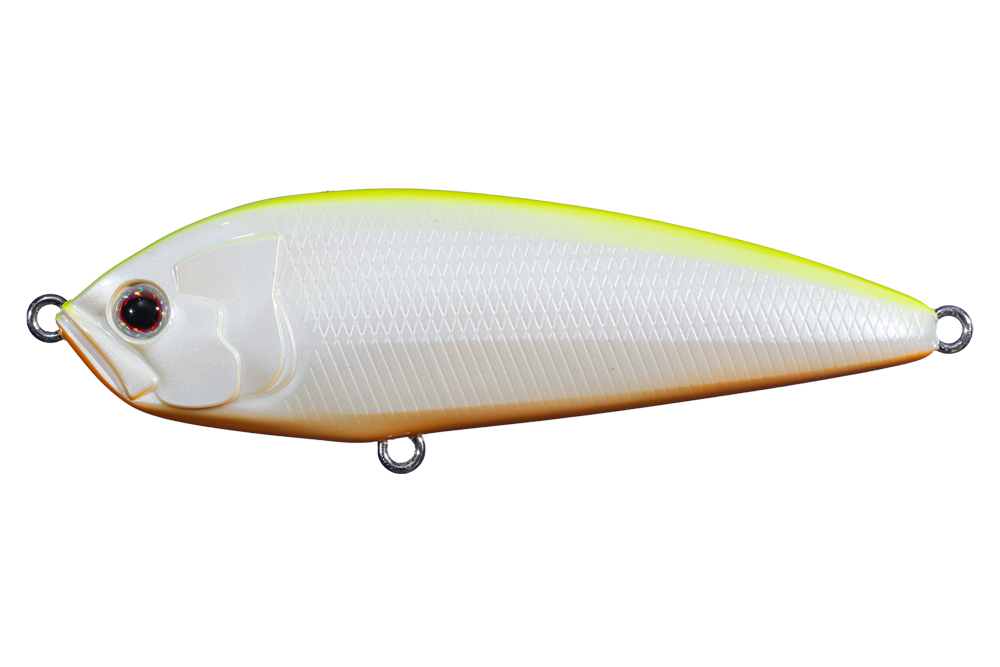
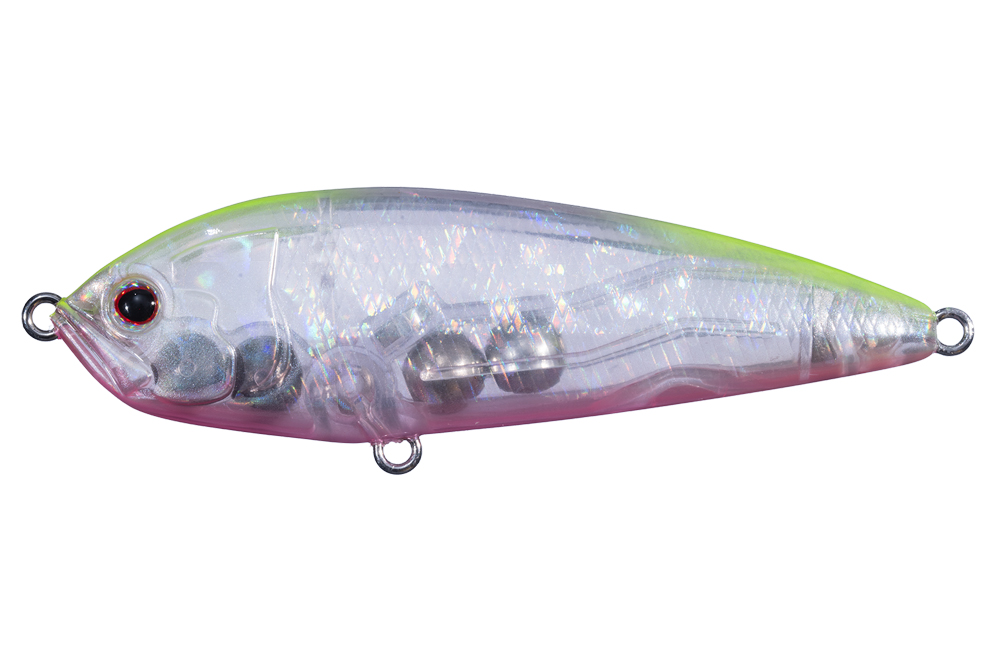
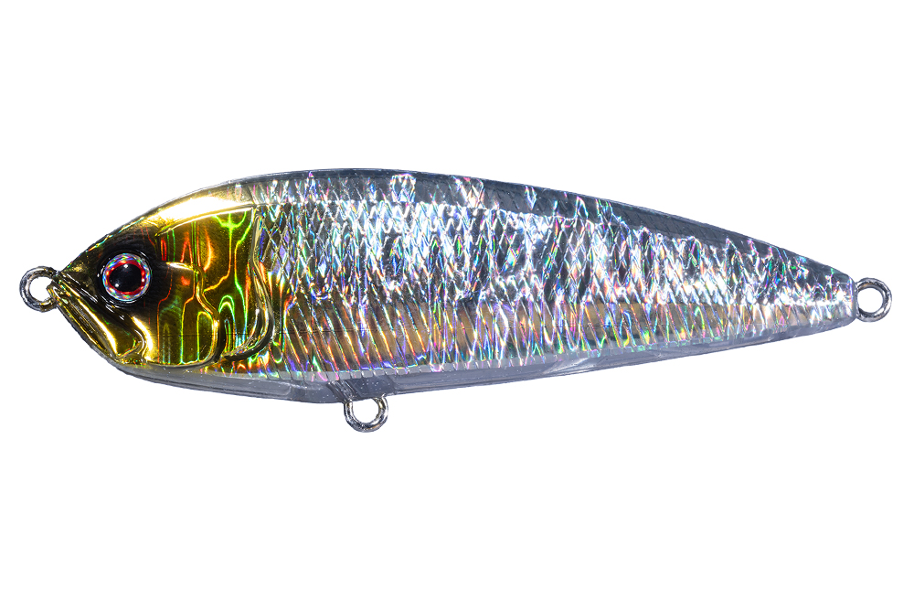
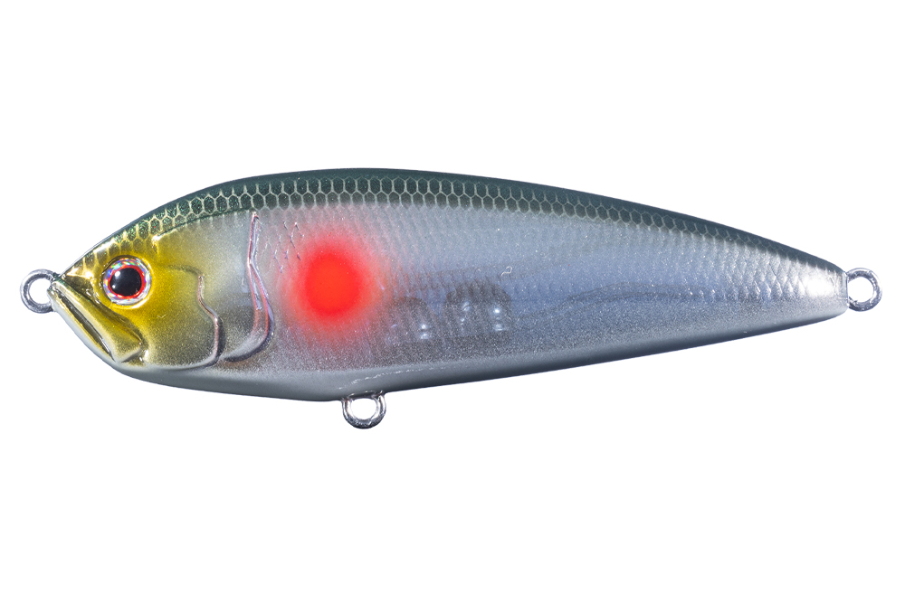

ムロッソ85S
（シンキングペンシル）
ムロッソ85S（Mrosso85S）はOSP（オーエスピー）のシンキングペンシルです。
高い遠投性や操作性といったトータル性能を徹底追求した、誰もが使いやすい設計。フルフラットなボディ形状により流れに応じてスラローム幅が変化し、S字軌跡を描くのが最大の魅力です。

画像出典:OSP公式HP
スペック
- メーカー
- OSP（オーエスピー）
- タイプ
- シンキングペンシル
- 全長
- 85mm
- 自重
- 20.4g
- フック
- #5
- ターゲット
- シーバスなどソルトゲーム全般
- 価格
- 2,090円（税込）
- 発売
- 2026年10月
▼今すぐチェック
ムロッソ85Sの特徴
フルフラットボディが生む、流れに応じて変化するS字スラロームアクション
-
フルフラットボディで流れに応じたS字スラローム
ボディ側面をフラットに設計し、流れの強さに応じてスラロームの振れ幅が変化。一定ではないS字軌跡で、見切られにくいアクションを演出する。
-
ドリフト対応でロッドアクションも自在
流れに乗せて漂わせるドリフト釣法に対応しつつ、ロッドアクションを加えればドッグウォークも繰り出せる。状況に応じて操作方法を変えられる。
-
重心移動システムで遠投性能と操作性を両立
重心移動システムを搭載し、立ち上がりの良い遠投性能を確保。フォール時には震え動作で誘いを加えられる設計。
ムロッソ85Sの使い方
基本はただ巻きとドリフトの組み合わせ。流れのあるポイントでは流れに乗せて漂わせ、フルフラットボディが生むS字スラロームで自然な誘いを作るのが基本の使い方です。
ロッドを小刻みに操作すればドッグウォークも出せるため、ただ巻きで反応が薄い時はロッドアクションを加えてみる。着底を意識したい場面では、フォール時の震え動作を活かしてカーブフォールで誘うのも効果的です。
ムロッソ85Sの得意な状況
河川のヨレや潮流のあるポイントで、流れに乗せたドリフトを活かしたい状況が最大の出番。
遠投が必要な広いフィールドでも、重心移動システムによる飛距離でしっかり届かせられる。ただ巻きだけでは反応が薄い場面で、ロッドアクションを加えたい時にも選びたい1本です。
ワンポイント
流れが強いポイントでは、あえてロッド操作を加えずドリフトに専念させると、S字スラロームの変化がより自然に出ます。
反応が渋い時は、着水後のフォールで震え動作を見せてから巻き始めると、バイトのきっかけを作りやすくなります。
オススメカラー
ムロッソ85Sは全10色展開。状況に合わせやすいオススメカラーを厳選して紹介します。

チャートバックパール CB07濁り潮やローライト時でも視認性を確保できる高アピールカラー。

葉桜 CL19澄み潮やデイゲームでも違和感を与えにくいナチュラル系カラー。

フラッシュシルバー FS65強いフラッシングでアピール力を重視したいサーチベイトとして使いやすい。

HMグローベイト GB71グロー入りでナイトゲーム・ローライト時にも対応できる1色。
画像出典:OSP公式HP
ムロッソ85Sに似ているルアー
-
 シュリペン70
ジップベイツ
詳細はこちら＞
シュリペン70
ジップベイツ
詳細はこちら＞
コンパクトなシンキングペンシル。流れに乗せたドリフト適性という点でムロッソ85Sと近い使い方ができる。
-
 フリッド125S
ブルーブルー
詳細はこちら＞
フリッド125S
ブルーブルー
詳細はこちら＞
同じシンキングペンシル。後方重心で高速フォールと引き抵抗を出す設計で、サイズ違いの選択肢として持ち替えやすい。